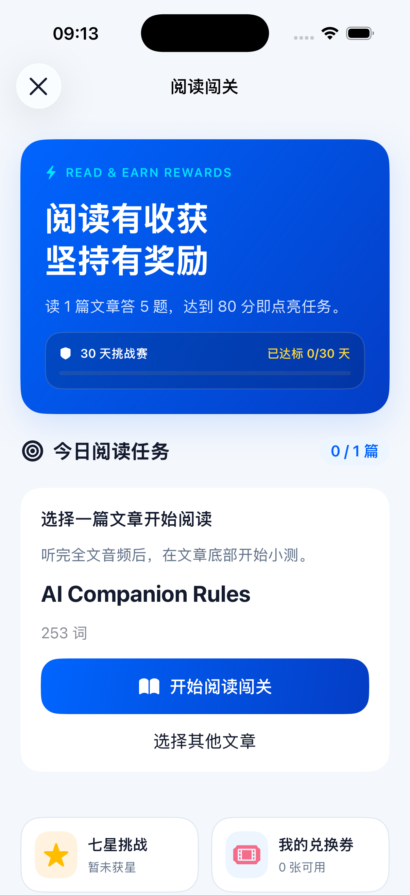
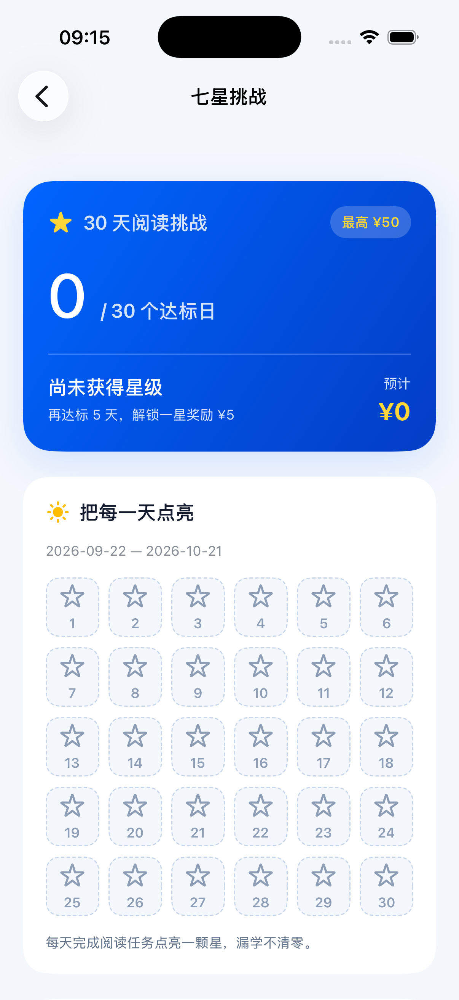
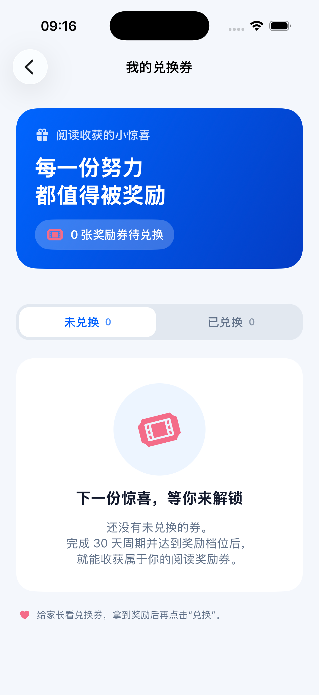

翻译、词义、句意、内容理解和概括，至少覆盖三种题型。
READ · UNDERSTAND · ACHIEVE
阅读小测与七星奖励
听完一篇文章，用五道开放题检验理解；把每天的达标积累成可向家长兑换的奖励。
全文听完解锁五题同页80 分达标30 天累计奖励
01方案概览
听完全文→开始小测→提交五题→80 分达标→周期发券→向家长兑换
每题正确 20 分、错误 0 分，每天最多获得一个达标日。
30 天内累计达标，周期只发最高档一张券，漏学不清零。
当前交付状态：iOS 已接入线上服务，复用原有登录与网络层：获取真实题目、同步听读、提交与恢复批改、加载挑战和兑换券、确认兑换。模拟器已加载现网数据，千问真实出题成功；批改质量、实际达标及兑换闭环仍需真实作答验收。正式入口不使用示例题目或模拟奖励。
02界面效果
从现有 App 文章列表进入“阅读闯关与奖励”。三页采用浅灰蓝背景、蓝色渐变主卡和白色内容卡，自动跟随系统深浅主题；滚动时导航与页面背景保持一致。






列表加载：当前任务和单词本按账号保存本机缓存，打开先展示已有内容，再后台同步。首次使用或新设备没有缓存时显示加载提示；失败可重试，不把未加载误显示成空列表。同步失败保留缓存，成功返回空列表才清空；缓存不会自动从其他设备复制，最新任务仍以服务端为准。
点击截图可查看大图。主卡使用 #0065FF → #043DC5 渐变；页面背景 #F4F7FC。已达标用金色实心星，未达标用灰蓝色细线空心星（Light 字重），不显示“补”。奖励列表的数字和状态文字与日历一致：达成金棕色、未达成灰蓝色；当前档位采用柔和同色描边。
03阅读与作答
| 页面 | 最终交互 |
|---|---|
| 文章阅读 | 底部“开始小测”在全文英文音频自然播放完成、记录同步且题目准备好后可用。支持分次、逐句听完；滚动到底、点过播放或只听最后一句不算完成。读完后停留当前文章。题目未就绪时区分排队、出题审核、自动重试和失败，等待较久会提示稍后回来，并提供“刷新题目”；听读记录保留，无需重听。 |
| 逐词跟读 | 原文随音频进度逐词高亮；暂停、换句和结束时清除高亮。正文及句子翻译浮窗中的英文均支持。 |
| 阅读小测 | 全屏纵向展示五题，白底描边输入框，支持文字和语音转文字。显示已答题数，草稿按账号、文章和版本保存本机，每题最多 2000 字符；第五题下方只有一个“提交全部答案”按钮。 |
| 退出与原文 | 小测无返回按钮，右上角使用统一灰色 × 关闭按钮；“查看原文”只提供英文，其窗口采用同款关闭按钮。退出保留草稿。 |
| 提交与反馈 | 空题提示题号，可返回补充或仍然提交；提交中禁用按钮。提交前保存请求 ID；网络结果不明时锁定原答案，重试复用同一请求。退出不取消服务端批改，重进恢复提交状态；系统失败可重试。批改完成后提供逐题判定、简短反馈、总分和是否通过。 |
听读事件按句子和服务端版本保存，断网后保留待同步记录；从文章页重进或恢复前台后重试。旧预览记录不自动计入线上成绩。听完音频只解锁小测，任务完成还需达到 80 分。正文修改后重新计算听读完成情况；重复练习不重复增加奖励天数。
04千问出题与批改
文章上传后，服务端预生成五道开放题及标准答案。至少包含三种题型，题目和引用必须有原文依据；同时保存必需要点、可接受表达和关键错误，并通过独立的质量检查。
| 题型 | 考察方式 |
|---|---|
| 原句翻译 | 将指定原句译为中文，保留人物、动作、否定和转折等关键信息。 |
| 语境词义 | 解释单词或短语在本篇文章中的含义。 |
| 句意理解 | 用自己的话说明某句话、指代或上下文关系。 |
| 内容理解 / 概括 | 根据文章回答事实、原因或主旨问题，不要求文外知识。 |
判分规则
- 五题一次提交，千问逐题判断语义；接受中英文同义表达，不因不影响理解的小拼写或语法错误扣分。翻译题按题干要求作答。
- 程序按正确题数 × 20 计算总分，≥80 分通过；空答计 0 分，不使用部分分。模型不决定达标天数或奖励金额。
- 无法可靠判断时自动独立复核一次；仍不确定则返回“需复核”、分数为空，不强行算错，也不计达标。孩子可以重新提交答案。
- 同一正文版本沿用已生成的五题；修改正文才生成新版本。已提交的答案按提交时的原文和评分标准批改。
判分示例
原句：Although Tom was tired, he kept walking.
20 分：“汤姆累了，不过他还是接着往前走。”
0 分：“汤姆太累了，所以停下来休息。”
题目接口不下发标准答案和评分要点。系统超时或格式错误进入重试，不产生错误成绩；已成功批改的同一次提交不能反复请求重新评分。
0530 天挑战与兑换
首次进入挑战或首次有效提交开始一个 30 天周期，采用上海时区的自然日，跨月仍按 30 天计算。每天首次通过一篇未过关文章记一个达标日；同日多读不抵扣其他日期，相同文章、修改链或相同内容重导不重复奖励。
| 累计达标 | 星级 | 周期最高奖励 |
|---|---|---|
| 0–4 天 | 未获星级 | 不发券 |
| 5–13 天 | 一星 | ¥5 |
| 14–20 天 | 二星 | ¥10 |
| 21–25 天 | 三星 | ¥15 |
| 26–27 天 | 四星 | ¥20 |
| 28 天 | 五星 | ¥25 |
| 29 天 | 六星 | ¥35 |
| 30 天 | 七星 | ¥50 |
漏学不清零，不支持补签。达标归属以服务端接受提交的日期为准，跨午夜批改仍归入提交日。周期结束只发最高档一张券，不叠加；30 天全部达标且没有待批改时可立即结算。系统故障导致待批改的周期暂缓结算，下一周期独立开始；已自动复核但仍无分数的结果不阻塞结算。
兑换方式
孩子给家长展示兑换券，家长兑现约定奖励后，孩子点击“兑换”。成功后原卡片按钮显示“兑换成功”并禁用，保持当前位置，不自动切换到“已兑换”分类；主动切换分类或重新进入后再归类。兑换失败保留重试，重复点击只记录一次。
券展示星级、金额、来源周期、累计天数和时间。整张券兑换、默认不过期；不接入银行支付，不设置家长审批。兑换状态是孩子对线下兑现的标记。
交互示意 · 不修改学习数据
28 天 · 五星
0 天30 天
周期最高档兑换券¥25周期结束后发放一张向家长兑现后点击
06服务端实现
沿用 Go / Gin、MySQL 8.0+ 和现有登录鉴权。文章与小测共用同一个 AIService，读取现有 QwenAPIKey、QwenAPIURL、QwenModel，默认模型为 qwen-plus。出题、质量检查、批改和自动复核均复用 CompleteJSONPrompt。
| 职责 | 实现约定 |
|---|---|
| 文章与听读 | 上传或改原文时，同一事务保存不可变快照并建立出题任务；历史文章按需补建。听读记录绑定试卷版本与句子，服务端检查全部句子完成；旧版本进度不能解锁新版本。 |
| 题目引用校验 | 引用必须逐字来自原文。模型填错句子编号时，仅在引用能在原文中唯一定位的情况下自动纠正编号，再交给独立质量审核；引用不存在或无法确定位置仍拒绝并重试。 |
| 提交与后台任务 | 一次提交五题，请求 ID 保证网络重发不重复创建。MySQL 持久化队列、两个工作者、最多五次自动尝试；失败可重试，重启可恢复，AI 调用在事务外执行。接口返回已尝试次数、最大次数及开始时间；故障日志区分出题、引用校验、质量审核及超时，不记录密钥或学生答案。 |
| 周期与兑换 | 数据库锁和唯一索引保证一天一次、文章一次、周期一券。后台定期结算；金额以整数分存储，重复兑换返回原记录及首次兑换时间。 |
| 记录与隔离 | 保存原文快照、题目、答案、判定及模型信息；删除文章不丢失奖励历史。所有资源校验用户归属，学生答案不进入调试日志。 |
接口覆盖文章小测、逐句听读完成、提交与结果查询、任务重试、当前挑战、历史周期、券列表与兑换。详细契约见 服务端接口说明，现有密钥配置见 千问配置说明。
部署：发布脚本仅更新后端并检查服务与数据库连通性，沿用服务器现有配置。小测与奖励建表 SQL 随程序嵌入，在启动时幂等执行；不自动扫描其他迁移文件，也不代替首次数据库初始化。操作说明见 部署文档。
接入边界：iOS 已完成听读上报、题目与批改轮询、挑战同步和券兑换接入。自动化验证覆盖断网恢复、请求幂等、账号与版本隔离、空分数、真实日期日历及兑换失败保护；运行
iosclient/ReadingApp/PreviewTests/run.sh 可复验。当前版本不提供家长自定义周期、人工裁决、成绩申诉或补差券。听读门槛基于客户端自然播放完成回调，服务端校验记录完整性。